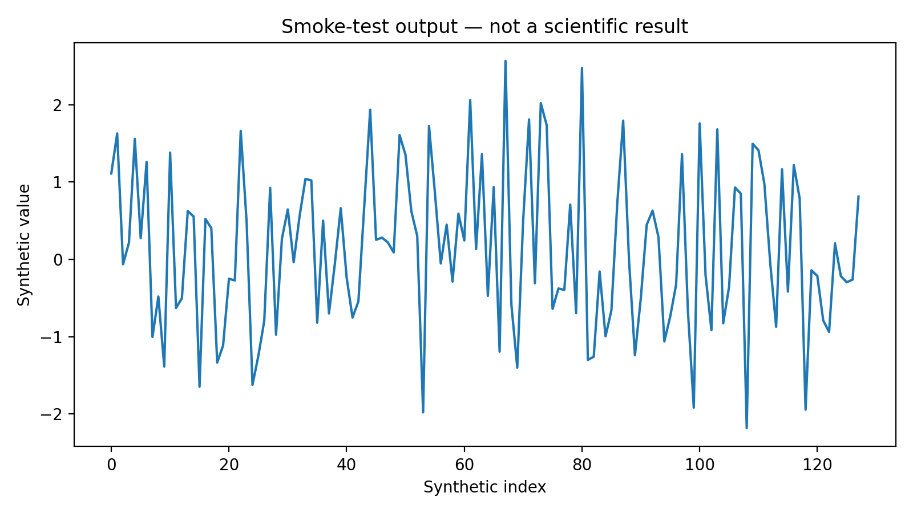
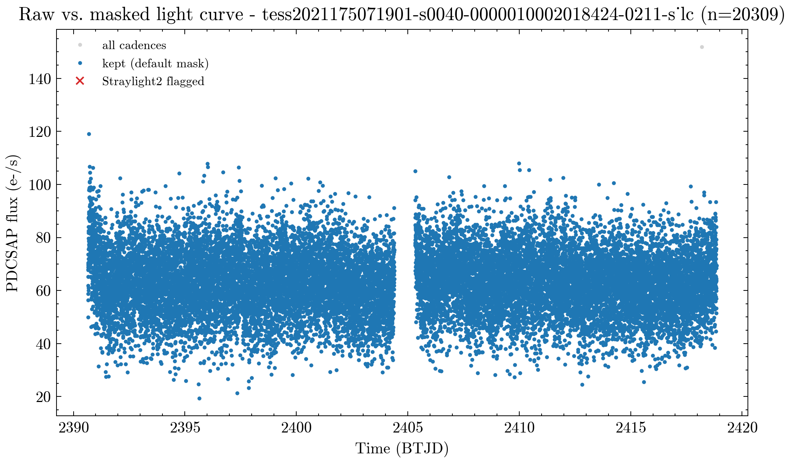

Provenance
SHA-256, LF-normalised text
b8f3d7bbe7a269bbe14d96f70c8a5544f37f30d94c8ec1fe3ee8331e5a36f012Browse 13 versioned evidence files. Table previews simply display stored rows. Consult the project report for the source, processing steps, and inference assumptions.


b8f3d7bbe7a269bbe14d96f70c8a5544f37f30d94c8ec1fe3ee8331e5a36f012| product_id | source | source_url | retrieved_utc | sha256 | file_size_bytes | selection_reason |
|---|---|---|---|---|---|---|
| tess2021175071901-s0040-0000010002018424-0211-s_lc | MAST/TESS | https://mast.stsci.edu | 2026-07-16T11:18:42.737599+00:00 | 5b73a1b0e0f23d743d6c9374b5e48d20bf6b43b18e835f4a5c6b03ff633ae3a1 | 2062080 | deterministic first-3 public TESS Sector 40 SPOC 2-minute LC target sample, sorted by target_name |
| tess2021175071901-s0040-0000001001497746-0211-s_lc | MAST/TESS | https://mast.stsci.edu | 2026-07-16T11:18:42.737599+00:00 | b341db3c1cb0b24071d04fdd93d264e4e4f6ca699d12f778d78ab6eb1bfdbdea | 2062080 | deterministic first-3 public TESS Sector 40 SPOC 2-minute LC target sample, sorted by target_name |
| tess2021175071901-s0040-0000001001498523-0211-s_lc | MAST/TESS | https://mast.stsci.edu | 2026-07-16T11:18:42.737599+00:00 | 391df368e262c7aeb2898fa83717deaed333173c36d41c44adf5a98cf2dcdee4 | 2062080 | deterministic first-3 public TESS Sector 40 SPOC 2-minute LC target sample, sorted by target_name |
e1ba5c51e08d2ab7bd39d1a609e1aeb9f45854d3acbbc334d0b532ae0848c51bab18b656f614e5c82304c9a5678c3c173cf968b540edd65d08a37c7e70f12c59| x | value | uncertainty |
|---|---|---|
| 0 | 0.10 | 0.02 |
| 1 | 0.18 | 0.03 |
| 2 | 0.14 | 0.02 |
| 3 | 0.24 | 0.04 |
2231cd2f44a7854fefcb8da60f527333a903c9c7a75fbd9154fdde13de699305a0df6828eecf027146cc7a14744fb1351bf2993fecda0d35e4ffe96f30e5f875a2a1b057c05156fa64cea04c4d96fcd113dd5166df98975845f02795850b3889a1f50966dab8e71bed6774590d45b75fcb1e22f292e6cfd472d1e905128fc7b95729115bdec6b142603ed15f9a512e2fd897969b0d0a9610505b689222a1a925a93d6c3b3437994402862deed1045fd894fbd9d5797a1c5a7ef7b89efac5602c6e104c3cdba1becfbf60a54e0703f2bdf3517d73746068d6e54045eff7680253f88b8c488db6ddecee095336e4a715285491d287e4cfef85316784b74d5e62b537dd0a8bb55d4ca0a14b16876d5b97bbae7b631e0bd62ac05b834a99106cbdd176c35fbc388d037e8f6b53d01aec76a4782fcc7c9ba7a7fd8bcb5316ee26d09fSHA-256 values verify the stored files. They do not independently validate the scientific analysis. Rebuild this page with python scripts/evidence_catalog.py followed by python scripts/render_evidence_page.py.